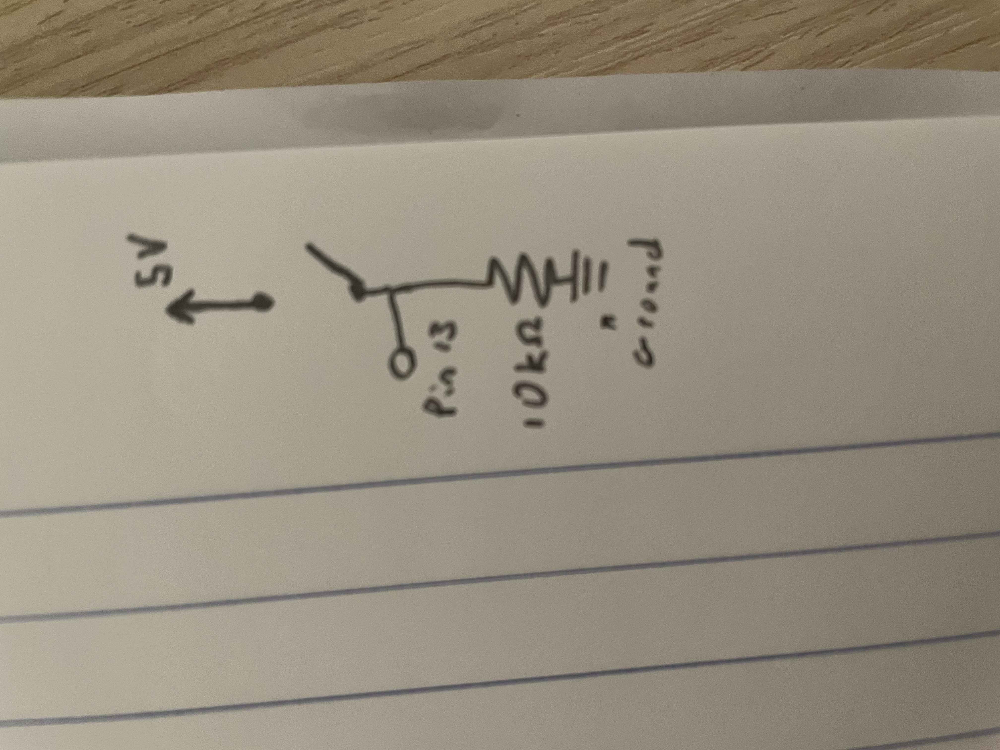
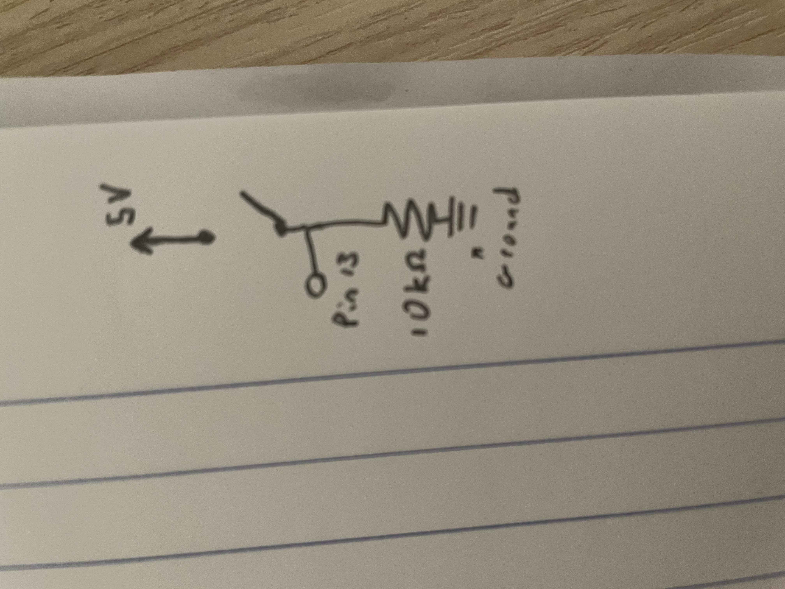

Here is a gif of my simple pattern fading circuit. This is composed of three blue led's which follow the pattern of Bottom Light -> Middle Light -> Top Light and continues repeating. Each light is on for 2 seconds, starting very dim and then getting brighter, then dimming back down to an off state. 1 second is spent on increasing brightness and one second is spent decreasing it. After one light turns off, the next one begins its fading cycle immediately.
Above is a static image of my circuit. It's a little bit messy since my breadboard was being uncooperative! However, in essence I have a separate section for each light that I run, and another separate section for the button. Each LED section draws power from a separate port, then also includes a LED and a resistor. The button section uses a 10k resistor instead of a 100 Ohm one, and draws directly from the 5V power port rather than one of the others. It also has a wire that connects it to the input port in order to perform the digitalRead operation. There's also some basic cable management, such that each blue wire correlates to an arduino output port, and the white wires connect to the negative strip, which is grounded through the black wire. The power port uses a red wire and the port used to colect input uses a yellow wire.
 

Above is the schematic image of my circuit. I have chosen to depict each LED's schematic, although they are all the same setup. Each pin is supplying 5 volts, and each LED creates a 3.3V voltage drop. I decided that having them pull from separate ports would be the easiest way for me to allow them to blink individually with my current knowledge, since I could just control which ports were powered. I chose to use 100 ohm resistors since they were the closest to my target resistance (85 ohms). Further, it seems reasonable to adjust towards greater resistance in this situation since picking the closest lower ohm resistor would cause the LED to burn out faster.
For this project, I have additionally added an image of my input circuit, which draws directly from power and then has a button, a wire to an input pin, and a 10k Ohm resistor into the grounding line.
The calculations I made for the ideal resistance were as follows: I know the port's output is 5V, and that a blue LED has a voltage drop of 3.3V, meaning that the system has 1.7V unresisted with just wires. In order to hit a target current of 0.02A, I can solve the equation 1.7V=0.02A*R for R to get R=1.7/0.02 (or R = 85), where R is my target resistance. However, since I do not have an 85 Ohm resistor, I used a 100 Ohm one, resulting in me solving 1.7V=A*100R, getting A = 1.7/100, or 0.017A as my actual current.
The rationale behind the 10k Ohm Resistor in the input circuit is primarily based on the advice we were given in class, but I chose it's placement so that it could serve as a pull-down resistor. Additionally, the button is only specced for 50 miliamps, so a 10k resistor will divide the 5V output by 10k to put the current around 0.5 miliamps, well within working conditions, and preventing anything from getting fried.
// GLOBAL PARAMETERS
// Numbers of Active Ports
int OutputPorts[] = {9,10,11};
int InputPorts[] = {13};
// Count of Active Ports
int OutputPortsCount = 3;
int InputPortsCount = 1;
// Setup Function
void setup() {
// Performs Setup Functionality on Active Ports
portSetup();
digitalWrite(9, HIGH);
}
// Loop Function
void loop() {
// If we get button input, we call the rotatingSmoothFadeManager
if (digitalRead(13) == HIGH) {
// Calls the helper function to play a series of lights, without repeats
rotatingSmoothFadeManager(false);
}
}
// Port Setup Utility Function
// This function will activate all ports
// in OutputPorts
void portSetup() {
// Guard against bad input
if (OutputPortsCount > 0) {
// Iterates through OutputPorts and performs the
// pinMode Activation on them
for(int i = 0; i < OutputPortsCount; i++) {
// Finds number of port that should be activated
int portNumber = OutputPorts[i];
// Activates the port
pinMode(portNumber, OUTPUT);
}
}
// Guard against bad input
if (InputPortsCount > 0) {
// Iterates through InputPorts and performs the
// pinMode Activation on them
for(int i = 0; i < InputPortsCount; i++) {
// Finds number of port that should be activated
int portNumber = InputPorts[i];
// Activates the port
pinMode(portNumber, INPUT);
}
}
}
// In Depth Fade Function that gives user high levels of control, assumes a PWM port is assigned.
// Granularity increases with oneWayTime and difference between start and end brightness and inversely with increments.
// @param port: The port to control light to
// @param startBrightness: The brightness to start at
// @param endBrightness: The target brightness at the end of a one way fade
// @param oneWayTime: How long a one way fade should take
// @param increments: How many breaks to make the fade - higher makes the change less noticeable
// @param reverseFade: If true, the fade will happen in reverse at the end, returning to start brightness.
void robustFade(int port, double startBrightness, double endBrightness, double oneWayTime, double increments, bool reverseFade) {
double toFade = endBrightness - startBrightness; // Variable for net change in brightness (represented in output)
double fadeAmount = (toFade / increments); // variable for how much to change brightness per increment of fade
double fadeDelay = (oneWayTime / increments); // variable to put delay between increments of fade.
// endVal is the target value to end at, in case there were rounding errors
double endVal = endBrightness;
if (reverseFade) { // if we are having a reverseFade
endVal = startBrightness; // then we will swap the endVal
}
// Brightness starts at the start
int currentBrightness = startBrightness;
// We write this start brightness
analogWrite(port, currentBrightness);
// We run this loop increments times
for (int i = 0; i <= increments; i++) {
delay(fadeDelay); // delay by our precalculated delay
currentBrightness += fadeAmount; // Increases brightness by brightness increment
analogWrite(port, currentBrightness); // Outputs brightness
// If we hit our expected end
if (currentBrightness <= 0 || currentBrightness >= 255) {
// This is the case for when we have are doing the reverse
if (reverseFade && (currentBrightness <= 0 || currentBrightness >= 255)){
reverseFade = false; // unflag reverse action
fadeAmount = - fadeAmount; // invert our fade amount
i = 0; // reset i
}
}
}
analogWrite(port, endVal); // fencepost variable for bad rounding
}
// SmoothFade is a function that performs a smooth looking fade
// on a target port
// @param port: desired port to fade.
void smoothFade(int port) {
// Calls robustFade with preset values
robustFade(port, 0, 255, 1000, 255, true);
}
// Utility/Manager Function to manage a rotating smooth fade pattern
// @param repeatPattern: true if we want to repeat the pattern infinitely else false
void rotatingSmoothFadeManager(bool repeatPattern) {
// This loop will run forever if the pattern is set to repeat
do{
// Iterator through #Active Ports
for (int i = 0; i < OutputPortsCount; i++){
// Calls the blink method
smoothFade(OutputPorts[i]);
}
// this is the condition for the while loop
} while (true && repeatPattern);
}
This graph shows the voltage over time of three LED's, each one represented by different colors. This is based on the voltage drops in their ideal system for a blue LED. In order to simulate this, I want to show how a PWM pin represents a certain voltage by outputing 5V a percentage of the time that correlates with the percentage of 5V that the target voltage takes. I do this by multiplying 3.3 V by 255/255, given that 255 is the always - on output of 5V. Then for the others we can divide their values - 128 and 64 by 255 - to get their percentage, then multiply 3.3 V by it. As a sanity check, we know that 128 is roughly half of 255, meaning the analog write for it will be outputting 5V roughly half the time, so the voltage will be half of the normal voltage drop. Importantly, this does not mean that the voltage drop is halved, just that the voltage (still at the voltage drop) turns on half as often as before, causing a halfed average voltage.
It's worth mentioning my voltmeter measured about 2.87V, and then half and a quarter of that value for 128 and 64, but I chose to represent the mathematical ideal rather than the actual.
Given the problem statement, I am choosing to exclude the button. My code runs the target pattern once when the button is pressed, which will not drain the battery by itself, so I am assuming someone is holding down the button or pressing it as soon as it reenables (at the end of a cycle).
My lights run in sequence with no breaks in between, and when they are not the active LED they receive no power, so I will simplify to consider as if there is one led permanently cycling. I know that PWM's work by "toggling" between 0 and 5V at a ratio that will simulate the target voltage, so my LED's voltage drop will always be 3.3V, and the actual voltage will always be 5V in my calculations for current. My resistors are 100 Ohms. If there was no fading and the lights were always on at max brightness, the calculation would be (5V-3.3V)/100R = 0.017A
However, I want to factor in the fading. Since we know that the led spends equal time at each value upwards and downwards (and in my code implementation, it hits each i val from 0 to 255 and back), we can see the average voltage as (0+5)/2, or 2.5V. To get our always on average (calculated using 5V) to this, we can just divide our current in half as well (since 2.5 is half of 5). This will give a current of 0.0085Amps, or 8.5 miliAmps.
Since this fade effect is always happening, we can look at this current draw as happening every seccond. (even though it will differ by the moment, it will average out to this every second (a one way fade is 1 seccond)). The battery is 1200 mAh, or 1200*60*60 mA seconds. We divide this value (4,320,000 mA s) by our current per seccond (8.5) to get 508,235.294 mA sm or roughly 141 hours before the battery goes dead (assuming it outputs continuous and consistent energy).
We could also do this in reverse, saying we have a draw of about 8.5*60min*60s mAh , and then 1200*60min*60s divided by our gain would give 141 mAh